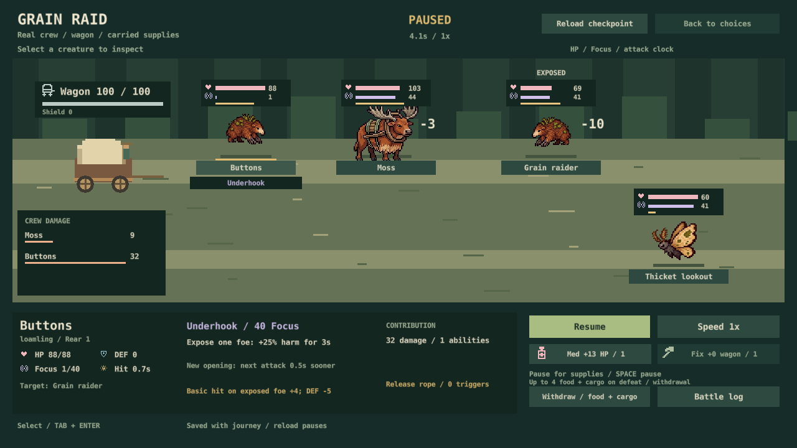

November 2, 2026 / Current phase: core systems
Make the whole expedition work.
Wagon combat is connected. Next: balance the journey around it, check the feel, then prove one memorable creature partnership.
This is an already-approved work queue, not another YES/NO page. No repeat approval is needed.
What works now
Six individual creature kits. One to three active travelers. Repeating attacks and abilities, formations, carried gear, and a wagon to defend. Road fights carry injuries, Energy, supplies and wagon damage back into the expedition. Peaceful choices remain available. Mid-battle saves, old saves, sound and reduced-motion settings already exist.

The gap
Connected does not yet mean balanced or satisfying. In the S30 fixed-policy study, Discovery won 19 of 29 fights; Classic won all 33. Delivery was 6/40 versus 13/40. The bots used default formations and no combat supplies. That is a reason to investigate solo starts, readiness, recruitment and recovery—not proof that enemies need a blanket nerf.
Fights averaged 14.7–16.5 seconds of simulation at 1×. We have not verified human pacing, enjoyment or the 20–35 minute expedition target. Searching every stretch also caused severe deadline pressure in an older study; that needs a fresh comparison with selective searching and adaptive pace under the new combat.
Recommended order
S5 · Balance combat across a whole trip Top pick / next
Compare one-, two- and three-creature crews, sensible formations, carried supplies, early recruitment and selective searches on matched seeds. Measure fight outcomes, recovery cost, wagon damage and delivery together.
Why: the weakest evidence is the Discovery journey, not the attack resolver. Cost: medium; one focused comparison, then a bounded tuning PR if supported. Avoid extra forced fights, free rewards or deadline changes without evidence and the relevant design approval.
S10 · Check the actual expedition feel Top pick / alongside S5
Play a fresh and resumed journey through recruitment, battle, recovery and a final outcome. Check physical input, sound, pause/speed, readable ability feedback and whether the road still breathes between decisions.
Why: screenshots and deterministic bots cannot establish fun. The historical Windows activation fault has not been proven resolved. Cost: medium; one focused playtest and fixes for observed bugs. No art overhaul.
S32 · One symbiotic creature pair Top pick / first new mechanic
Prove the approved passenger-and-host relationship: one creature gives up its own attacks to support another, with clear detach and knockout behavior.
Why: it gives collecting a distinctive team-building payoff beyond elemental types. Cost: medium; one bounded pair, deterministic saves and a readable sample. Test whether the sacrifice creates a real choice before spreading it through the roster.
S33 · Reedskipper learns one local trick
A habitat-earned adaptation selected through the existing habit system, with an explicit tradeoff. Why: links exploration to individual creature growth without XP grinding. Cost: small to medium; one adaptation and its save/UI checks. Follow the partnership test.
S35 · A small migration encounter pool
Weather or season changes which wildlife can appear, with useful clues. Why: repeated expeditions can reveal different life along the same route. Cost: medium; a small pool and seeded eligibility checks. No extra deadline burden.
S34 · One food-web choice
Diet notes plus an authored predator/prey or food-animal encounter. Why: creatures should feel like wildlife with lives of their own. Cost: small; one event/trade and its consequences. Hunting and slaughter systems remain outside this approval.
S36 · Continue the 300-species index
Author the next 20–30 distinct ecological briefs, informed by the mechanics above. Why: scale a coherent world instead of repeating six kits. Cost: medium editorial batch; implementation is a separate regional step. Today: 6 implemented, 24 briefs including those six, 276 unfilled slots. Art remains deferred.
Checks and limits
Current main: 4a9c1fe; gameplay baseline: S30 / a422352. All 148 simulation scenarios passed again for this audit. Reused unchanged S30 evidence: native save checks, five rendered screens, 480 matched journeys with exact repeats and 80 identical peaceful pairs. No known failing automated test. Human listening, physical keyboard/pacing, the historical activation issue and release-candidate checks remain open.
S30 report · Seeded comparison and source hashes · Current species index
Earlier unanswered design choices — not blockers for this queue
A2 Discovery default / A3 inert Trust display; D4 courier lineups / D5 collection aims; E1 woodland yields / E2 Slatewhorl footing. They keep their original codes and remain unbuilt unless answered. Revisit old numerical proposals against S30 evidence before implementing them. No votes are copied or inferred here.